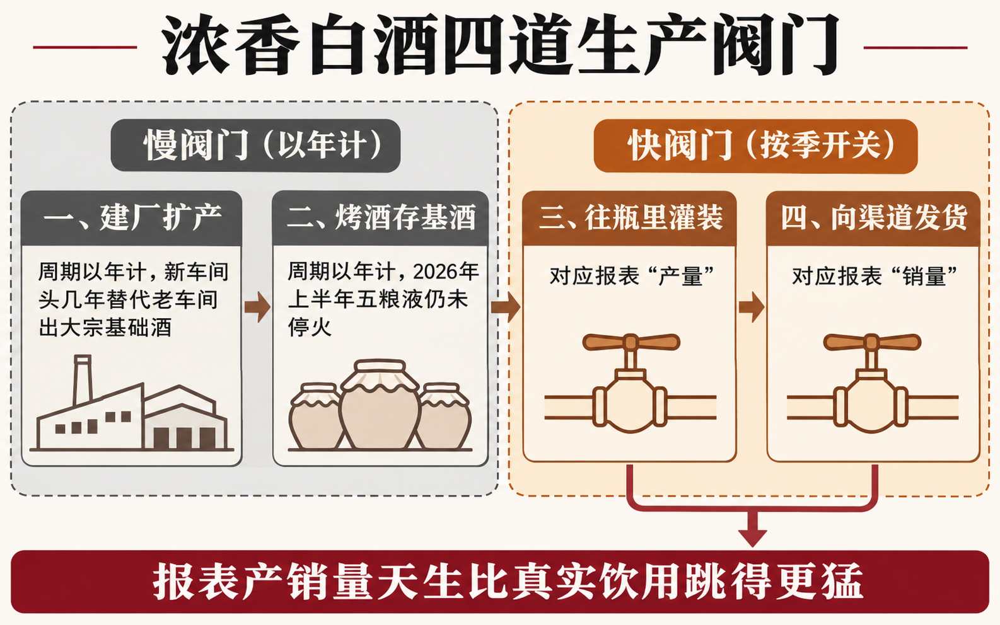
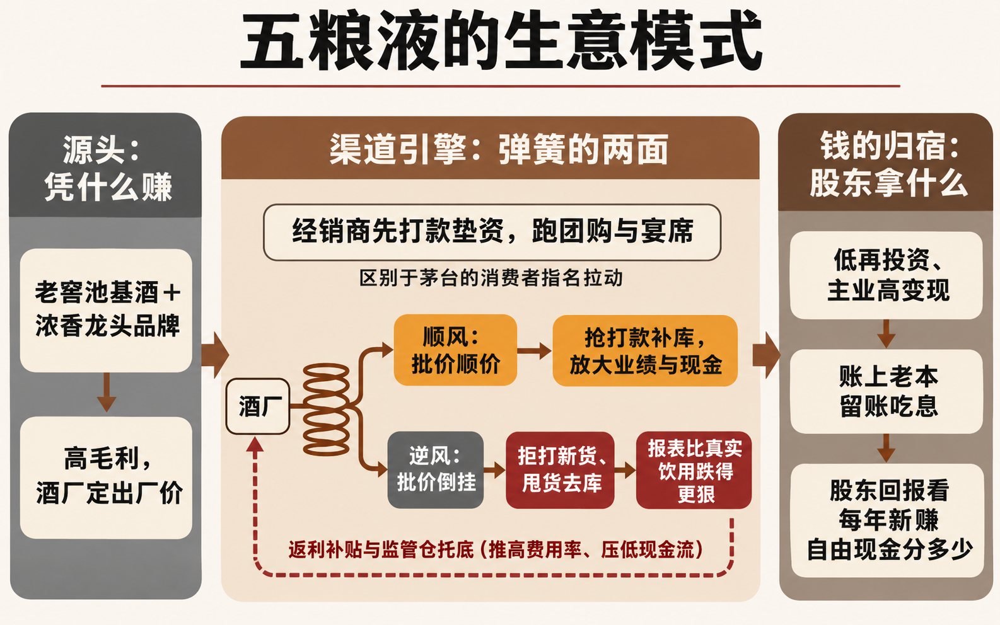

白酒这门生意怎么运作
一瓶千元浓香白酒从投入到交付的四道阀门，哪两道以年计、哪两道按季开关
看白酒先破一个直觉：报表里单季产量、销量腰斩，不等于酿酒车间熄了火。把快慢两套生产时钟混成一把尺子，就会误判行业出清进度。
一瓶千元浓香白酒从投入到交付要过四道阀门。建厂扩产以年计，车间烤酒存基酒也以年计；往瓶里灌装是报表里的“产量”，向渠道发货是报表里的“销量”。只有后两道按季随行情开关，所以报表产销量天生比真实饮用量跳得更猛。
- 2026 年上半年，五粮液烤酒阀门没有关。半成品酒库存从 2025 年末 212,271 吨升至 2026 年 6 月末 265,402 吨，半年净增 5.31 万吨；同期泸州老窖半成品酒也增加 2.71 万吨。
- 快阀门则被大幅关小。按全酒类总生产量看，2026 年上半年五粮液灌装同比 −51.9%，降幅大于同期老窖的 −44.2%。单看灌装缩量只能说明厂里在控成品酒投放，不代表上游停产或渠道已清完。
- 新建酿酒车间不能直接变出最高端酒。按研究依据的工艺判断，新建智能化车间投产头几年主要替代老车间出大宗基础酒，把老窖池腾出来专供高端。五粮液在建预算里真正投向酿酒车间的拆账，见财报之根。

口径备忘：基酒增量算法与工艺判断边界
基酒增量口径：五粮液 5.31 万吨与老窖 2.71 万吨均由两期期末半成品酒库存量相减得出，含陶坛基酒或基础酒，报表未单拆当期新烤入库与勾调消耗；老窖存酒原因与灌装明细归入财报之根·对照老窖。
工艺判断边界：“新车间头几年替代大宗基础酒、不直接出最高端酒”属研究依据的工艺说法，未取公司公告原句。
谁在场内分钱：三档与两种渠道
白酒三档生态划分，以及“消费者指定拉动”与“品牌加渠道推动”的宿命差
把头部名酒放进同一个篮子，最容易看走眼。2026 年前三季归母净利润较 2024 年同期，贵州茅台变动 6.0%，五粮液变动 −61.0%，老窖变动 −51.1%，走势已经劈成两路。
研究者按生态把白酒切成三档：贵州茅台独一档，五粮液与泸州老窖同处千元第二档，其余酒企归第三档。同一生态内可以互相印证常态利润，跨档不能硬套倍数。
- 茅台赚的是“消费者指定拉动”的钱。终端指名购买让批价长期顺价，公司借直营渠道收回价差，与千元第二档靠渠道推货的机制截然不同。
- 五粮液与老窖吃的是“品牌加渠道推动”的饭。经销商先向酒厂打款垫资，再去跑团购和宴席。按国金证券周报同源月度口径，2026 年 11 月第八代普五批价 740 元，相对 1,019 元出厂价处于 −27.4% 的倒挂位。
- 批价一倒挂，费用率立刻反噬利润。经销商进货即浮亏，自然拒绝打新货；酒厂只能靠返利补贴和渠道费用托价。2026 年前三季五粮液销售费用率推高到 23.73%，同期老窖为 13.64%。
口径备忘：国窖价格对照、批价双来源与茅台字段边界
国窖 1573 价格对照：二手券商周报与媒体口径下，高度国窖 1573 出厂价 980 元，2026 年 6 月起市场传出的开票价 910 元仅为业务人员口述、无公司公告；2026 年 11 月国金周报口径批价 825 元，对出厂价 −15.8%。
普五批价双来源：正文主口径用国金证券周报同源月度批价，2026 年 11 月为 740 元；另一来源酒排名 2026-11-16 行情参考价报 795 元，对出厂价 −21.98%。两源价差不读成短期价格变动，月度全序列见数据底表与口径。
茅台字段边界：冻结的茅台数据未收录 2026 年前三季销售费用率、批价、出厂量与经营现金流同口径字段，下表标为“—”，不跨源拼凑。
| 公司 | 前三季归母较 2024（%） | 前三季销售费用率（%） | 核心单品批价对出厂价（%） | 出厂量占 2024（%） | 前三季经营现金流（亿元） |
|---|---|---|---|---|---|
| 五粮液 | −61.0 | 23.73 | −27.4 | 47.0 | 0.47 |
| 泸州老窖 | −51.1 | 13.64 | −15.8 | 86.8 | 44.45 |
| 贵州茅台 | 6.0 | — | — | — | — |
五粮液出厂量指五粮液产品，老窖指中高档酒；核心单品为普五与国窖 1573（2026-11 批价）；茅台的销售费用率、批价、出厂量、经营现金流在已冻结的茅台数据里没有同口径字段，写“—”
2026 年前三季较 2024 年同期，茅台维持正变动，五粮液与老窖同现深跌；五粮液销售费用率 23.73% 与倒挂 −27.4% 均深于老窖，正是两家渠道活法的直接投影。
五粮液的生意模式：弹簧，不是直线
下行期报表超跌的弹簧机制、千元双雄的两种活法与慢夕阳托底假设
不少人以为只要稳住浓香龙头位次，五粮液就能像茅台一样走出平缓的直线红利。但在渠道推动的机制下，经销商库存会放大顺逆风，这门生意天生像一根弹簧。
- 下行期经销商甩货去库，报表比真实饮用跌得更狠。2025 年五粮液产品出厂量降至 19,455 吨，只剩 2024 年 41,390 吨的 47.0%。同期吨价从 164.0 万元/吨降至 143.6 万元/吨，量跌得比价狠得多；2026 年前三季经营现金流净额压至 0.47 亿元。但出厂量腰斩里去库与终端需求缩水各占多少，公开资料看不到。
- 千元档两种活法：明牌扛痛对控货稳价。五粮液守住高出厂价，靠高补贴与监管仓把压力摊在当期费用率和现金流上；同档老窖则走“控货稳价加借债囤基酒”，2025 年中高档出厂保住 2024 年的 86.8%，到 2026 年上半年同比转降 −42.53%，去库慢了半拍。老窖的渠道库存与变现拖累拆账见财报之根。
- 千元需求的托底靠“慢夕阳”假设，只托量、不推价。研究者假设，商务团购承压的同时，过节团圆、好友小聚与送长辈的个人自掏腰包消费会在普五批价回落、与次高端价差收窄后接走一部分预算，配合低度五粮液与低度国窖托住销量底部，不过只托量、不推高溢价。

口径备忘：弹簧类比边界、行业渠道调研与销量统计口径
弹簧类比无实证：“下行超跌、补库向上超弹”属于商业机制类比，缺乏跨周期统计实证；历史样本只有上一轮“经营现金流先于利润弹起”一轮，见财报之根。
行业渠道二手调研：酒业家 2025-07 调研称：「高端团购、商务场景较高的类型下滑最为明显，约为 50%」
原调研未写样本与统计方法，价格带只及中高端而非单列千元档，仅作方向参考。华创证券 2026-10-08 国庆渠道反馈称：「宴席场次持平微降，单场用酒量有所下滑，用酒档次尚可」
这是不分价位的券商反馈，无法直接拆出千元档的场景占比。
出厂量口径差异：“五粮液产品”不止包含第八代普五；老窖“中高档酒类”包含国窖 1573、特曲与窖龄。千元价位终端饮用量与场景拆分查不到，研究只能用出厂量与利润近似。
研究前提与认知标记
显性标出全篇九条承重前提的性质分类与推翻开关
全篇承重前提按可推翻难度分三类：工艺与制度约束 来自酿造工艺、渠道制度与会计规则，最难改变；历史归纳 来自过往周期样本，换了环境可能失效；研究假设 是研究者押下的关键判断，也是后面最要盯紧的脆弱点。
产销量按季波动不等于停止烤酒。其中“新车间头几年替代大宗基础酒、不直接出最高端酒”属研究依据的工艺判断，未取公司原句。
出厂价由酒厂定、批价由渠道撮合。一旦倒挂，经销商停打新货，酒厂用返利与监管仓托价，去库会放大报表跌幅。
归纳自上一轮调整的财务修复顺序，仅有一轮历史样本，若这一轮渠道结算规则生变则可能不再重演。
三档生态划分由研究者定下，无品牌黑天鹅时默认位次不重排；山西汾酒不在同一价格带，不能直接硬乘。
2014–2024 年五粮液利润翻五倍多，大头来自吨价与每吨利润大幅抬升，销量只是从低谷温和回升；若从上一轮高点拉长十二年看，销量更几乎原地踏步，这一轮不外推这套剧本。
研究者假设个人自掏腰包与低度酒只托住销量、不推高溢价，渠道去库结束后利润回到常态水平。
账上老本只算税后利息，每年新赚自由现金的留存部分按税后存款收益率生息，将老本与新钱彻底切开。
前提要求年底到期的关联协议不大幅提价、关联存款不被锁死挪用、行业缩量期不被迫降分红跨界乱投。
| 常见误判 | 更贴近生意的读法 | 对应哪一节 |
|---|---|---|
| 把“10% 统一尺子量出贵”当成“跑输茅台” | 10% 是全市场读水位的尺子，茅台在这把尺子下同样远高于不增长价值；两家须在同一条回报线上比确定性与叙事弹性。 | 引言·终局水位、估值之茎·回报矩阵 |
| 把“账上老本不分”和“每年新赚自由现金不分”混为一谈 | 前者是存量老本按零分配、只吃利息，后者是当年新赚自由现金按 80%–95% 分配，两笔钱不在同一个池子里。 | 估值之茎·两笔钱切开 |
| 以为五粮液账面更难看、所以现价不如老窖值 | 老窖费用率更低，但借债扩产加持续多存基酒压低了长期现金转化率，撑不起 85 亿元保底分红，现价反而偏贵。 | 财报之根·对照老窖 |
| 以为熬过寒冬就能复刻 2014–2024 年利润翻五倍的剧本 | 上一轮酒类销量几乎原地踏步，从 15.31 万吨只走到 16.20 万吨，爆发靠每吨归母从 4.91 万元涨到 19.66 万元，不能外推；能复用的是“经营现金流先于利润弹起”。 | 财报之根·上一轮见底 |
| 以为 277.54 亿元在建预算是锁死的必花巨款 | 277.54 亿元只是立项上限而非负债，其中真正建酿酒车间的两期只有 62.07 亿元，2026 年上半年九项合计只新花 4.85 亿元。 | 财报之根·在建预算 |
复查节点与公开盲区：两个硬日期与待补缺口
两个复查节点：一是 2026-12-31 前后的集团商标、土地与管理区关联协议续签公告；二是 2027 年 4 月披露的 2026 年报，核对监管商品款项结转、关联存款与 2027–2029 年新分红规划。完整跟踪信号见叙事之果·什么会推翻。
公开盲区：千元白酒真实的终端饮用量、商务与个人消费场景拆分，以及已签约未付款的资本性承诺金额在公开资料里都看不到，留待后续年报与公告补验。
生意时钟、三档生态、弹簧机制与九块地基至此摊开。接下来逐环验真：先到财报之根拆解更正、监管款、现金与老窖对照，再到估值之茎反算现价与回报矩阵，最后到叙事之果看清弹性边界与推翻信号，全部原始序列收于数据底表与口径。